classDiagram
class UHittable {
<<UInterface>>
+GENERATED_BODY()
}
class IHittable {
<<Interface>>
+OnHit(float DamageAmount)*
}
class AHittableTarget {
+OnHit(float DamageAmount)
}
class AHittableExplosive {
+OnHit(float DamageAmount)
}
class BP_HittableTarget {
<<Blueprint>>
}
UHittable <|-- UInterface
IHittable <|-- AHittableTarget
IHittable <|-- AHittableExplosive
UHittable <|-- BP_HittableTarget
Interfaces in C++ with Unreal Engine 5
Game Engines II | Games and Multimedia | 2nd Semester 2025/2026
1 Introduction
In this worksheet we are going to learn about Interfaces in C++ in the context of Unreal Engine 5, as well as some useful debug tools such as on-screen messages and line trace visualization.
To achieve this, we will build a small First Person mini-game where a gun fires a line trace that detects actors in the world. Depending on what is hit, different responses will be triggered, and this is where interfaces become essential.
By the end of this worksheet you will be able to:
- Replace a projectile-based weapon with a line trace
- Use debug tools to visualize and log information at runtime
- Create and implement Blueprintable and NotBlueprintable C++ interfaces
- Call interface functions on actors regardless of their concrete type
Tip
This worksheet uses the First Person C++ template available in Unreal Engine 5.6.
2 Project Setup
Open the Unreal Project Browser. We are going to use a C++ template. Select First Person. Leave the setup on Desktop. Name your project ShootingRange.
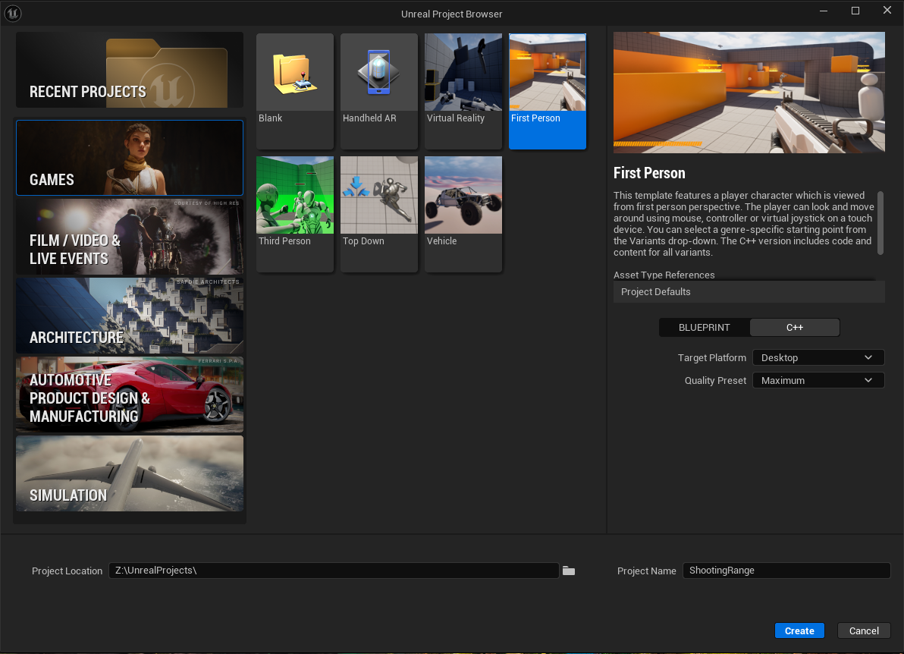
Important
Make sure to select C++ and not Blueprint as the project type. The C++ template in UE5.6 already comes with all Variant Shooter content included.
After the project is created and the editor opens, navigate to Content → Variant_Shooter in the Content Drawer and open Lvl_Shooter.
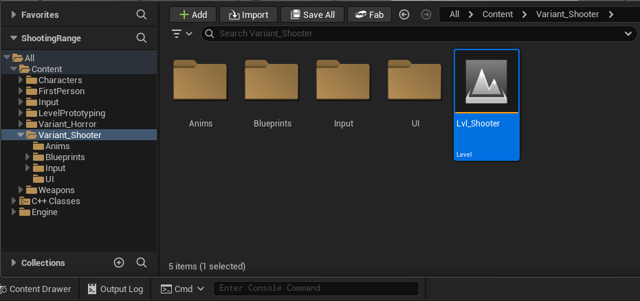
We need to set this as our default level. Click Edit on the menu bar, select Project Settings, and on the left select Maps & Modes. Set both the Editor Startup Map and the Game Default Map to Lvl_Shooter. That will save automatically in the DefaultEngine.ini configuration file. Close the Project Settings.
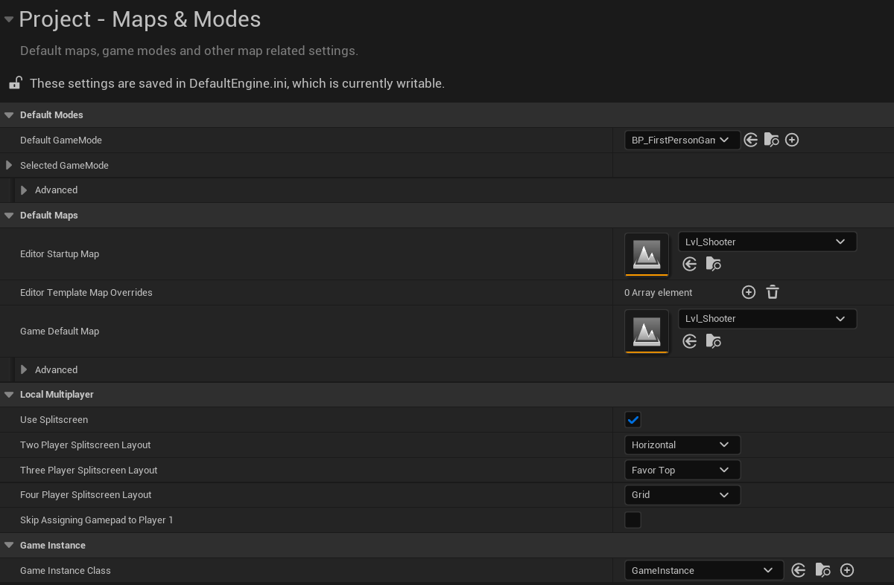
Let’s also remove both NPCs that are already present in the level by selecting and deleting them. Now, go to menu File and select Save Current Level to save the current level.
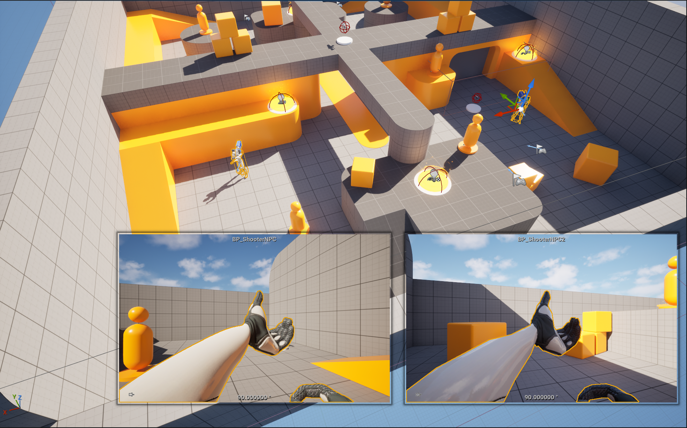
Finally, if you don’t have already Visual Studio open, click Tools → Open Visual Studio 2022 to open the project in the IDE. We are now ready to begin.
3 From Projectile to Line Trace
In the Solution Explorer, navigate to Source → ShootingRange → Variant_Shooter → Weapons and open both ShooterWeapon.h and ShooterWeapon.cpp.
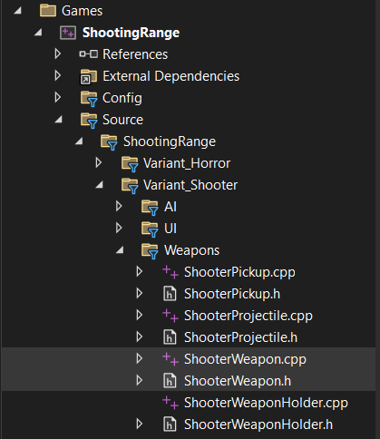
Inside the source file, locate the Fire() function. You will notice it currently calls FireProjectile(). Comment out this line, as we are going to replace it with our own line trace function. In ShooterWeapon.h, on the protected section, declare the new function:
/** Fire a line trace */
virtual void FireLineTrace();In ShooterWeapon.cpp, define FireLineTrace(). Start by copying the common weapon functionalities that already exist in FireProjectile(): playing the firing montage, applying recoil, consuming bullets, and updating the HUD:
void AShooterWeapon::FireLineTrace()
{
// play the firing montage
WeaponOwner->PlayFiringMontage(FiringMontage);
// add recoil
WeaponOwner->AddWeaponRecoil(FiringRecoil);
// consume bullets
--CurrentBullets;
// if the clip is depleted, reload it
if (CurrentBullets <= 0)
{
CurrentBullets = MagazineSize;
}
// update the weapon HUD
WeaponOwner->UpdateWeaponHUD(CurrentBullets, MagazineSize);
}Now we can implement the actual line trace. We need a FHitResult to store information about what was hit, start and end vectors for the trace, and collision query parameters:
FHitResult HitResult;
FVector Start = FirstPersonMesh->GetSocketLocation(FName(MuzzleSocketName));
FVector End = Start + FirstPersonMesh->GetSocketRotation(FName(MuzzleSocketName)).Vector() * 10000.f;
FCollisionQueryParams Params;
Params.AddIgnoredActor(this);
Params.AddIgnoredActor(GetOwner());
bool bHit = GetWorld()->LineTraceSingleByChannel(
HitResult,
Start,
End,
ECC_Visibility,
Params
);
Note
MuzzleSocketName and FirstPersonMesh are already defined in ShooterWeapon.h. 10000.f is the trace range in centimeters and ECC_Visibility is a suitable collision channel for this scenario.
Now call FireLineTrace() in the Fire() function to replace the commented line:
// fire a projectile at the target
// FireProjectile(WeaponOwner->GetWeaponTargetLocation());
// fire a line trace
FireLineTrace();Compile with CTRL+ALT+F11 and test the game. You should hear the weapon fire and see the bullet count decrease, but nothing will appear on screen yet since we have not added any debug output.
4 Debug Tools
When we shoot we can see the bullets counting down in the UI and we also have a small recoil on the weapon when firing, but we might want to verify if the trace is working correctly. The most basic approach is to write to the Output Log using UE_LOG. After doing the line trace, let’s check if it hit something to display a message:
if (bHit)
{
UE_LOG(LogClass, Log, TEXT("Hit Something"));
}However, switching between the game and the Output Log or having it occupy space in our screen during gameplay is not very convenient. A more practical approach is to display the message directly on screen using GEngine:
if (bHit)
{
if (GEngine)
GEngine->AddOnScreenDebugMessage(-1, 2.0f, FColor::Green, TEXT("Hit Something"));
}Instead of a generic message, we can display the exact name of the actor that was hit using FString::Printf:
if (bHit)
{
if (GEngine)
GEngine->AddOnScreenDebugMessage(-1, 2.0f, FColor::Red,
FString::Printf(TEXT("Hitting %s"), *HitResult.GetActor()->GetName()));
}Now we can see exactly what the line trace is hitting in real time. However, when firing rapidly a new message appears for every shot, which can quickly become overwhelming. We can assign a key to the message so it always updates the same slot on screen instead of stacking new ones:
if (bHit)
{
if (GEngine)
GEngine->AddOnScreenDebugMessage(1, 2.0f, FColor::Red,
FString::Printf(TEXT("Hitting %s"), *HitResult.GetActor()->GetName()));
}
Note
Notice the first argument changes from -1 to 1
Having a key as a number is not very convenient though. If you recall the Print String node from Blueprints, it has a Key parameter that accepts a FName rather than an integer. That node comes directly from KismetSystemLibrary.
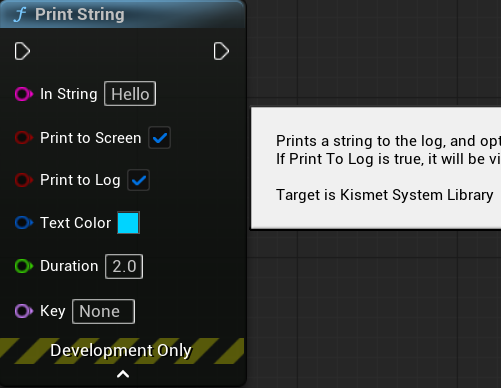
We can include it and use that exact same function in C++:
#include "Kismet/KismetSystemLibrary.h"if (bHit)
{
if (GEngine)
GEngine->AddOnScreenDebugMessage(1, 2.0f, FColor::Red,
FString::Printf(TEXT("Hitting %s"), *HitResult.GetActor()->GetName()));
UKismetSystemLibrary::PrintString(
GetWorld(),
FString::Printf(TEXT("Hitting %s"), *HitResult.GetActor()->GetName()),
true,
true,
FLinearColor::Blue,
2.0f,
"Hit"
);
}Both messages now display the same information. The KismetSystemLibrary version uses the FName key "Hit" and a blue color to distinguish it. Now that we have seen both approaches, remove the GEngine message and keep only the PrintString from KismetSystemLibrary.
We can now see what we are hitting through messages, but it would be better to have some visual feedback of where the line trace is going. To do so, we can use DrawDebugLine to draw a line using the same start and end vectors of the line trace.
DrawDebugLine(GetWorld(), Start, End, FColor::Red, false, 2.0f, 0, 0.5f);And it will look like this:
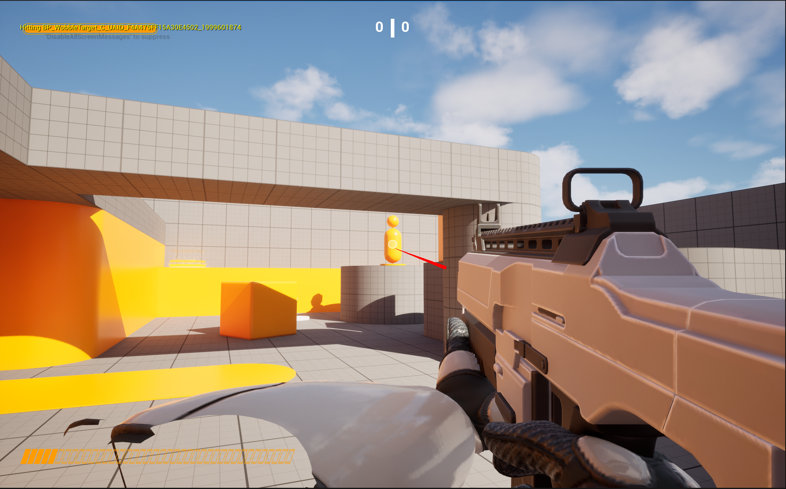
When we do Line Traces in Blueprints, we might use the LineTraceByChannel node and set the Draw Debug Type to anything other than None. We might notice that DrawDebugLine is different, as one key functionality it does not have is changing colors when the hit is successful. If we take a look at that node, we can see that it comes from the same KismetSystemLibrary.
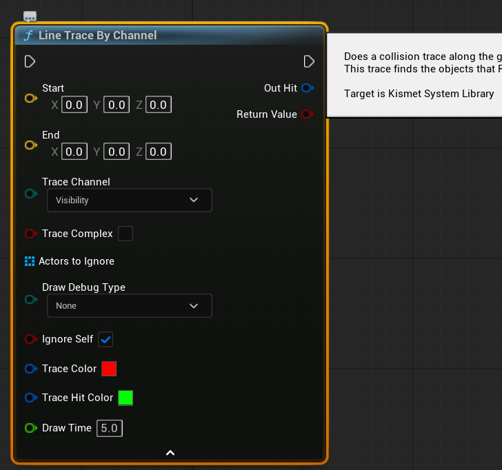
So instead of using a Line Trace and a Debug Line separately, we can use KismetSystemLibrary’s LineTraceSingle that does the line trace and the debug line trace at the same time.
Before switching to KismetSystemLibrary’s line trace, remove the Params variable, as it is not needed here. Instead, create two new local variables:
TArray<AActor*> ActorsToIgnore;
ActorsToIgnore.Add(GetOwner());
ETraceTypeQuery TraceChannel =
UEngineTypes::ConvertToTraceType(ECollisionChannel::ECC_Visibility);With those variables ready, we can now perform the line trace:
bool bHit = UKismetSystemLibrary::LineTraceSingle(
GetWorld(),
Start,
End,
TraceChannel,
false,
ActorsToIgnore,
EDrawDebugTrace::ForDuration,
HitResult,
true,
FLinearColor::Red,
FLinearColor::Green,
2.0f
);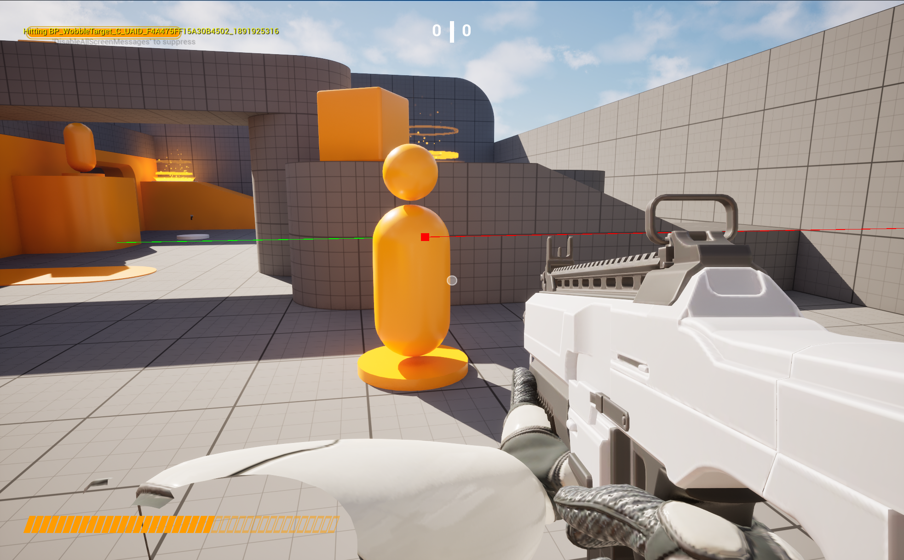
5 Interfaces in Unreal Engine 5
Now that we have a working line trace that detects actors, we need a way to respond differently depending on what was hit, without the weapon needing to know the exact type of every actor in the level. This is precisely the problem that interfaces solve.
An interface defines a contract: a set of functions that any class can agree to implement. The caller does not need to know what type of actor it hit. It just asks: does this actor implement the interface? If yes, it calls the function and the actor handles the rest.
5.1 The Three Types of Interfaces
Created entirely inside the Blueprint editor with no C++ backing. You already know these from the Blueprints course. Useful for quick designer-facing events with no C++ involvement.
Created in C++ and exposed to Blueprint. Both C++ classes and Blueprint actors can implement them. Functions are marked with BlueprintNativeEvent or BlueprintImplementableEvent.
Created in C++ only. Only C++ classes can implement them. Used when the contract is a pure code concern (physics, damage systems, save logic) that Blueprint should not implement directly.
In this worksheet we are going to focus on the two C++ variants.
5.2 The U Type and the I Type
Every C++ interface in Unreal Engine generates two classes from a single file. Understanding what each one does is essential.
The U type (UHittable) connects to Unreal’s reflection system. Blueprint actors that implement the interface are linked to this type. Its body must always remain empty, as it exists purely for the reflection system.
The I type (IHittable) is where all virtual functions are declared. C++ classes inherit from this type when implementing the interface.
Important
All virtual functions must be declared inside the I type, not the U type. The U type body must remain empty.
5.3 Checking if an Actor Implements an Interface
Implements<U> works for both C++ and Blueprint actors. Always safe to use.
if (SomeActor->Implements<UHittable>())
{
// works for C++ and Blueprint
}Cast<I> only works for C++ actors. Returns nullptr for Blueprint actors.
IHittable* Ptr = Cast<IHittable>(SomeActor);
if (Ptr)
{
// C++ actors only
}
Warning
Cast<IHittable> will return nullptr for Blueprint actors even if they implement the interface, because Blueprint actors never inherit from the IInterface type in C++. Use Implements<U> when you need to handle both.
5.4 Calling Interface Functions
The way you call an interface function depends on whether the interface is Blueprintable or not.
flowchart LR
A[Hit Actor] --> B{Implements UHittable?}
B -- No --> C[Do nothing]
B -- Yes --> D{Blueprintable?}
D -- Yes --> E["Execute_OnHit()"]
D -- No --> F["Cast<IHittable>→ OnHit()"]
For Blueprintable interfaces, use the Execute_ static wrapper generated by UHT. This ensures both C++ and Blueprint implementations are called correctly:
if (HitActor->Implements<UHittable>())
{
IHittable::Execute_OnHit(HitActor, Damage);
}For NotBlueprintable interfaces, cast to the I type and call directly:
IHittable* HittablePtr = Cast<IHittable>(HitActor);
if (HittablePtr)
{
HittablePtr->OnHit(Damage);
}
Warning
The Execute_ wrapper is only generated for functions marked as UFUNCTION. Non-UFUNCTION virtual functions do not get an Execute_ wrapper.
5.5 Storing Interface References
If you need to store a reference to an actor that implements an interface as a UPROPERTY, you cannot use a raw IInterface* pointer. Unreal’s garbage collector does not track raw interface pointers and this will cause crashes. Instead, use TScriptInterface:
UPROPERTY()
TScriptInterface<IHittable> HittableActor;You can then retrieve both the UObject and the IInterface pointer from it:
if (OtherActor->Implements<UHittable>())
{
HittableActor = OtherActor;
UObject* ObjectPtr = HittableActor.GetObject(); // always valid
IHittable* HittablePtr = HittableActor.GetInterface(); // valid for C++ actors only
}
Warning
GetInterface() returns nullptr for Blueprint actors. GetObject() is always valid for any actor that passes the Implements<U> check.
6 Creating the IHittable Interface
We will start with the NotBlueprintable interface. In the editor, click Tools → New C++ Class. Keep Common Classes selected and search for Unreal Interface. Select it and click Next.
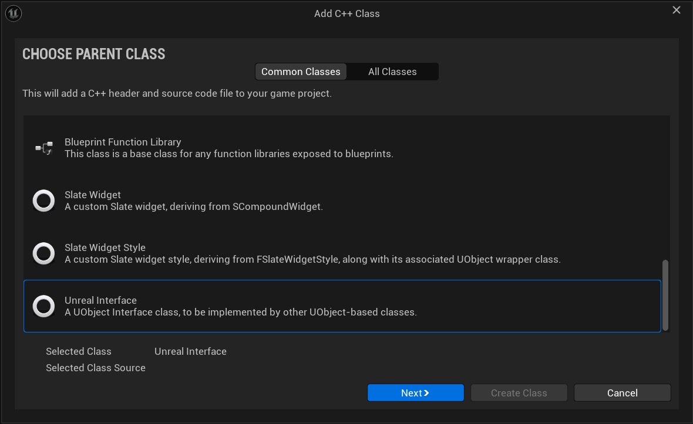
Name the interface Hittable and click Create Class.
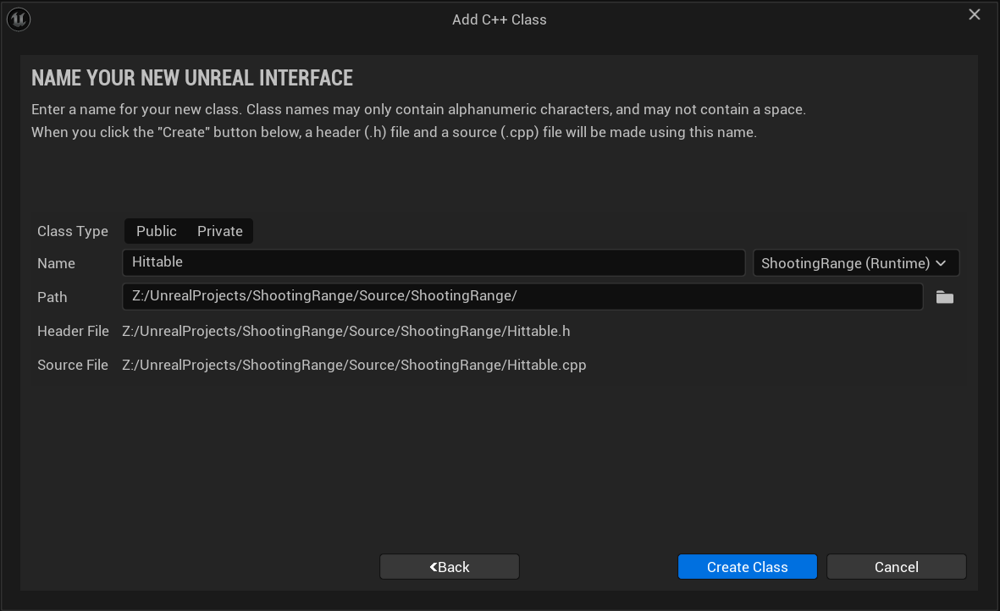
Open Hittable.h. You will see two classes have been generated, UHittable and IHittable. Leave the UHittable body empty and add your virtual function to IHittable:
#pragma once
#include "CoreMinimal.h"
#include "UObject/Interface.h"
#include "Hittable.generated.h"
UINTERFACE(NotBlueprintable)
class UHittable : public UInterface
{
GENERATED_BODY()
};
class PROJECTNAME_API IHittable
{
GENERATED_BODY()
public:
virtual void OnHit(float DamageAmount) = 0;
};The interface is intentionally minimal. It is just a contract. Everything else (health, death, scoring) will live on the class that implements it.
The = 0 at the end of the function declaration makes it pure virtual. This means any C++ class that inherits IHittable must provide its own implementation of OnHit or it will not compile. The contract is enforced by the compiler. You could also declare it as virtual void OnHit(float DamageAmount) {} with an empty body, which would make the implementation optional. Whether that makes sense depends on your design.
7 Creating the HittableTarget
Now we will create AHittableTarget, the C++ class that implements IHittable. In the editor, click Tools → New C++ Class, select Actor as the parent, and name it HittableTarget.
We know that this target will have health, will take damage, and will eventually “die” and respawn. Let’s start by declaring those variables and functions in HittableTarget.h:
#pragma once
#include "CoreMinimal.h"
#include "GameFramework/Actor.h"
#include "HittableTarget.generated.h"
UCLASS()
class SHOOTINGRANGE_API AHittableTarget : public AActor
{
GENERATED_BODY()
public:
AHittableTarget();
protected:
UPROPERTY(EditAnywhere, Category = "Target")
float MaxHealth;
UPROPERTY(EditAnywhere, Category = "Target")
float RespawnDelay;
private:
float CurrentHealth;
void Die();
void Respawn();
};MaxHealth and RespawnDelay are EditAnywhere so we can tweak them per instance in the editor. CurrentHealth is private because nothing outside this class should modify it directly.
Now that we have the structure, we need this actor to respond to being hit. This is exactly what the IHittable interface is for. Include the interface header and add IHittable as a second parent class:
#include "Hittable.h"class SHOOTINGRANGE_API AHittableTarget : public AActor, public IHittableBy inheriting from IHittable we are committing to implementing OnHit. The compiler will not let us forget. Now open HittableTarget.cpp and define each function.
In the constructor we set the default values of the variables and initialize CurrentHealth to MaxHealth. We will also include KismetSystemLibrary to display some messages:
#include "HittableTarget.h"
#include "Kismet/KismetSystemLibrary.h"
AHittableTarget::AHittableTarget()
{
// Set this actor to call Tick() every frame. You can turn this off to improve performance if you don't need it.
PrimaryActorTick.bCanEverTick = false;
MaxHealth = 100.f;
CurrentHealth = MaxHealth;
RespawnDelay = 3.f;
}OnHit reduces health, displays a message, and checks if the target should die:
void AHittableTarget::OnHit(float DamageAmount)
{
CurrentHealth -= DamageAmount;
UKismetSystemLibrary::PrintString(
GetWorld(),
FString::Printf(TEXT("Damage Taken: %.0f | Health: %.0f"), DamageAmount, CurrentHealth),
true, true, FLinearColor::Red, 2.0f
);
if (CurrentHealth <= 0.f)
{
Die();
}
}Die hides the actor, disables its collision, and starts a timer to call Respawn after the delay:
void AHittableTarget::Die()
{
SetActorHiddenInGame(true);
SetActorEnableCollision(false);
FTimerHandle RespawnTimer;
GetWorldTimerManager().SetTimer(RespawnTimer, this, &AHittableTarget::Respawn, RespawnDelay, false);
}Respawn restores health, unhides the actor, and re-enables collision:
void AHittableTarget::Respawn()
{
CurrentHealth = MaxHealth;
SetActorHiddenInGame(false);
SetActorEnableCollision(true);
UKismetSystemLibrary::PrintString(
GetWorld(),
TEXT("Target Respawned!"),
true, true, FLinearColor::Green, 2.0f
);
}8 Calling IHittable from the Weapon
Back in ShooterWeapon.cpp, include the interface header and update the hit logic inside FireLineTrace. For a NotBlueprintable interface we use Cast<IHittable> to get the interface pointer and call OnHit directly:
#include "Hittable.h"if (bHit)
{
UKismetSystemLibrary::PrintString(
GetWorld(),
FString::Printf(TEXT("Hitting %s"), *HitResult.GetActor()->GetName()),
true, true, FLinearColor::Yellow, 2.0f, "Hit"
);
AActor* HitActor = HitResult.GetActor();
if (HitActor)
{
IHittable* HittablePtr = Cast<IHittable>(HitActor);
if (HittablePtr)
{
HittablePtr->OnHit(25.f);
}
}
}Compile with CTRL+ALT+F11. Create a new folder called Blueprints in the Content folder and then create a Blueprint based on AHittableTarget named BP_HittableTarget, add a Static Mesh component and use SM_Cube_03 as the mesh, place it in the level, and fire at it. You should see the damage message update on screen with each shot, and the target disappear and reappear after a few seconds when it dies.
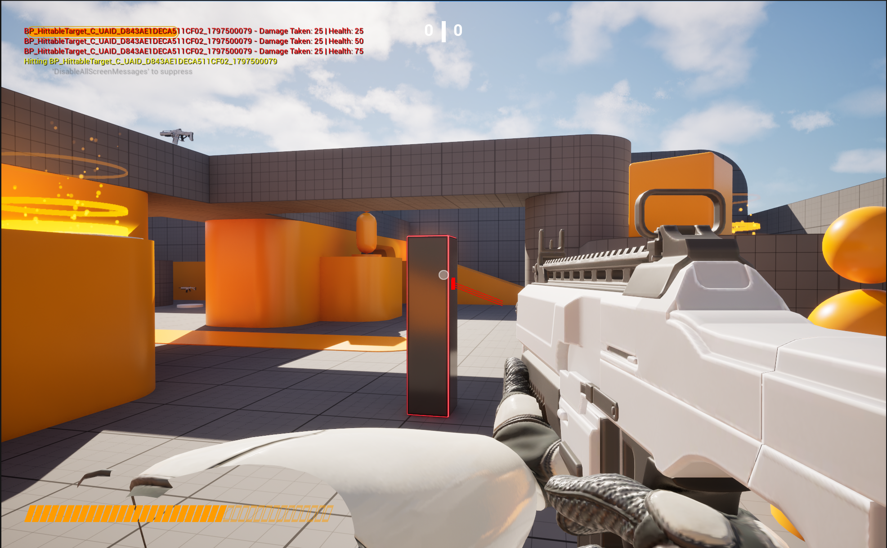
9 Creating the HittableExplosive
So far we have one class implementing IHittable. The weapon calls OnHit and the target progressively loses health. This works, but it does not yet demonstrate why the interface is powerful, as we have just used it on one type of actor.
We are now going to create AHittableExplosive, a completely unrelated class that also implements IHittable but behaves entirely differently when hit. The explosive has no health bar. A single hit triggers an explosion that calls OnHit on every IHittable actor within a radius, then the explosive hides and respawns after a delay. The weapon does not change at all, it still just does Cast<IHittable> and calls OnHit. The interface handles the rest.
In the editor, click Tools → New C++ Class, select Actor, and name it HittableExplosive.
Open HittableExplosive.h and inherit from IHittable. The explosive needs an explosion radius and damage amount that are editable in the editor, and the same respawn delay pattern as the target:
#pragma once
#include "CoreMinimal.h"
#include "GameFramework/Actor.h"
#include "Hittable.h"
#include "HittableExplosive.generated.h"
UCLASS()
class SHOOTINGRANGE_API AHittableExplosive : public AActor, public IHittable
{
GENERATED_BODY()
public:
// Sets default values for this actor's properties
AHittableExplosive();
protected:
UPROPERTY(EditAnywhere, Category = "Explosive")
float ExplosionRadius;
UPROPERTY(EditAnywhere, Category = "Explosive")
float ExplosionDamage;
UPROPERTY(EditAnywhere, Category = "Explosive")
float RespawnDelay;
private:
void Explode();
void Respawn();
public:
virtual void OnHit(float DamageAmount) override;
};Notice there is no health variable. The explosive does not care how much damage the incoming shot dealt, as any hit triggers the explosion immediately.
Open HittableExplosive.cpp. We are going to include KismetSystemLibrary, set the default values of the variables in the constructor, and set bCanEverTick to false.
OnHit simply calls Explode regardless of the incoming damage amount:
#include "HittableExplosive.h"
#include "Kismet/KismetSystemLibrary.h"
AHittableExplosive::AHittableExplosive()
{
PrimaryActorTick.bCanEverTick = false;
ExplosionRadius = 300.f;
ExplosionDamage = 50.f;
RespawnDelay = 5.f;
}
void AHittableExplosive::OnHit(float DamageAmount)
{
Explode();
}In Explode we use a sphere overlap to find all nearby actors, check each one for IHittable, and call OnHit on them with the explosion damage. Then we hide the explosive and start the respawn timer:
void AHittableExplosive::Explode()
{
UKismetSystemLibrary::PrintString(
GetWorld(), TEXT("BOOM!"),
true, true, FLinearColor::Yellow, 2.0f, "Explosion"
);
// draw a debug sphere to visualize the explosion radius
DrawDebugSphere(
GetWorld(), GetActorLocation(), ExplosionRadius,
24, FColor::Orange, false, RespawnDelay
);
// find all actors within explosion radius
TArray<AActor*> OverlappingActors;
TArray<AActor*> ActorsToIgnore = { this };
UKismetSystemLibrary::SphereOverlapActors(
GetWorld(),
GetActorLocation(),
ExplosionRadius,
TArray<TEnumAsByte<EObjectTypeQuery>>(),
AActor::StaticClass(),
ActorsToIgnore,
OverlappingActors
);
// call OnHit on every IHittable actor in range
for (AActor* Actor : OverlappingActors)
{
IHittable* HittablePtr = Cast<IHittable>(Actor);
if (HittablePtr)
{
HittablePtr->OnHit(ExplosionDamage);
}
}
// hide and start respawn timer
SetActorHiddenInGame(true);
SetActorEnableCollision(false);
FTimerHandle RespawnTimer;
GetWorldTimerManager().SetTimer(RespawnTimer, this, &AHittableExplosive::Respawn, RespawnDelay, false);
}
void AHittableExplosive::Respawn()
{
SetActorHiddenInGame(false);
SetActorEnableCollision(true);
UKismetSystemLibrary::PrintString(
GetWorld(),
TEXT("Explosive Reset"),
true, true, FLinearColor::Green, 2.0f, "ExplosiveRespawn"
);
}
Note
UKismetSystemLibrary::SphereOverlapActors is the C++ equivalent of the Blueprint Sphere Overlap Actors node. It takes the world, a center location, a radius, a list of object type filters, an actor class filter, and a list of actors to ignore. Passing an empty object type array checks all object types.
Compile with CTRL+ALT+F11. Create a Blueprint based on AHittableExplosive named BP_HittableExplosive, add a static mesh and use SM_Cube_02 as the mesh, and place it in the level next to some BP_HittableTarget actors. Shoot the explosive. It should explode immediately, dealing damage to all nearby targets, and you should see the debug sphere overlapping the targets and a message for each of them displayed on screen.
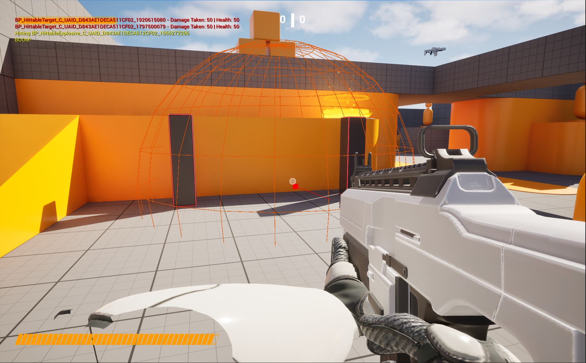
This is what makes the interface powerful. The weapon did not change and a completely new class with a different behavior was added to the game by simply implementing IHittable and defining what OnHit means for that class.
10 Creating the IInspectable Interface
So far every interaction in this project has been driven by shooting. We are now going to add a second input for inspecting. When the player holds the right mouse button and looks at an actor, if that actor implements IInspectable, it will display information about itself. Each Blueprint actor can define its own response freely, which is precisely what the Blueprintable interface is designed for.
The key difference from IHittable is that IInspectable is Blueprintable. This means Blueprint actors can implement it directly through Class Settings, without needing a C++ parent class. The C++ side only needs to call the function. The designer decides what happens.
In the editor, click Tools → New C++ Class. Keep Common Classes selected, search for Unreal Interface, select it, click Next, and name it Inspectable.
Open Inspectable.h. This time the UINTERFACE macro uses Blueprintable, and the function is marked with BlueprintNativeEvent and BlueprintCallable:
#pragma once
#include "CoreMinimal.h"
#include "UObject/Interface.h"
#include "Inspectable.generated.h"
UINTERFACE(Blueprintable)
class UInspectable : public UInterface
{
GENERATED_BODY()
};
class SHOOTINGRANGE_API IInspectable
{
GENERATED_BODY()
public:
UFUNCTION(BlueprintNativeEvent, BlueprintCallable)
void OnInspected();
};
Note
BlueprintNativeEvent means the function has a default C++ implementation via _Implementation that Blueprint can override. BlueprintCallable allows it to be called from Blueprint graphs. Because the interface is Blueprintable, any Blueprint actor can implement it through Class Settings without any C++ involvement.
11 Setting Up the Inspect Input
Before we can call the interface from the weapon, we need a new input action for the right mouse button. In the Content Drawer, navigate to Content → Variant_Shooter → Input → Actions. Right-click, select Input and then Input Action. Name it IA_Inspect.
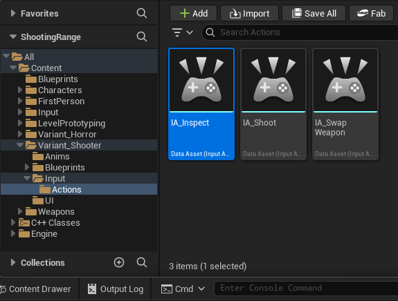
Now open IMC_Weapons in the same Input folder. Click the + button to add a new mapping, select IA_Inspect, and assign the Right Mouse Button as the key.

Now we need to bind this action in the ShooterCharacter class. Open ShooterCharacter.h and add a new input action variable alongside the existing ones:
/** Inspect actors input action */
UPROPERTY(EditAnywhere, Category = "Input")
UInputAction* InspectAction;In the Character source file, inside SetupPlayerInputComponent, bind the action to a new function that we are going to create:
// Inspect actors
EnhancedInputComponent->BindAction(InspectAction, ETriggerEvent::Triggered,
this, &AShooterCharacter::Inspect);Then declare and implement the Inspect function in ShooterCharacter.h. It will perform a line trace and check for actors that implement IInspectable:
/** Inspect actors implementing Inspectable interface */
void Inspect();#include "Inspectable.h"
#include "Kismet/KismetSystemLibrary.h"
void AShooterCharacter::Inspect()
{
FHitResult HitResult;
FVector Start = GetPawnViewLocation();
FVector End = Start + GetViewRotation().Vector() * 5000.f;
TArray<AActor*> ActorsToIgnore = { this };
ETraceTypeQuery TraceChannel =
UEngineTypes::ConvertToTraceType(ECollisionChannel::ECC_Visibility);
bool bHit = UKismetSystemLibrary::LineTraceSingle(
GetWorld(), Start, End, TraceChannel,
false, ActorsToIgnore, EDrawDebugTrace::None,
HitResult, true
);
if (bHit)
{
AActor* HitActor = HitResult.GetActor();
if (HitActor && HitActor->Implements<UInspectable>())
{
IInspectable::Execute_OnInspected(HitActor);
}
}
}
Note
The inspect trace comes from the Character rather than the weapon because it is not a weapon action. It uses GetPawnViewLocation and GetViewRotation to fire from the camera’s perspective, and EDrawDebugTrace::None since we do not need a visible trace for inspection. Notice we use Execute_OnInspected because IInspectable is Blueprintable, unlike IHittable where we used a direct cast.
Finally, open BP_ShooterCharacter in the editor and assign IA_Inspect to the Inspect Action slot in the Input section of the Details panel.
12 Implementing IInspectable in Blueprint
Now we can update an existing actor to implement IInspectable. Open the WobbleTarget Blueprint and go to Class Settings → Interfaces → Implemented Interfaces and click Add.
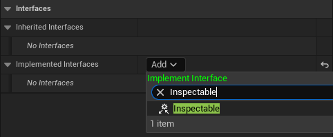
In the Event Graph, right-click and search for Event On Inspected. Add a Print String node with a custom message describing this actor, such as "I'm a Wobble Target", and set the Key to be Inspect.
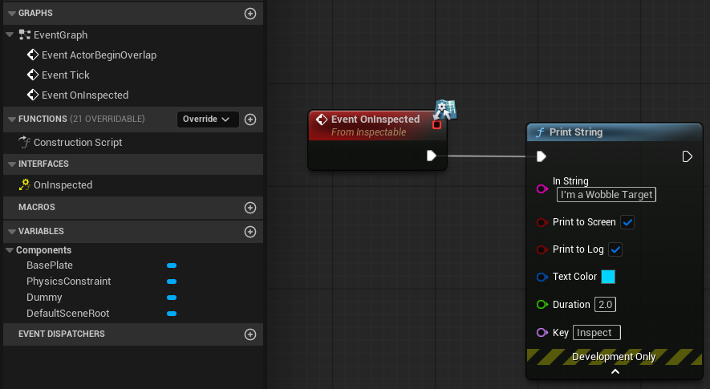
Hold the right mouse button while looking at the actor. You should see the custom message appear on screen. Looking at a BP_HittableTarget or BP_HittableExplosive produces nothing, since they do not implement IInspectable. The weapon still fires normally with the left mouse button, completely unaffected.
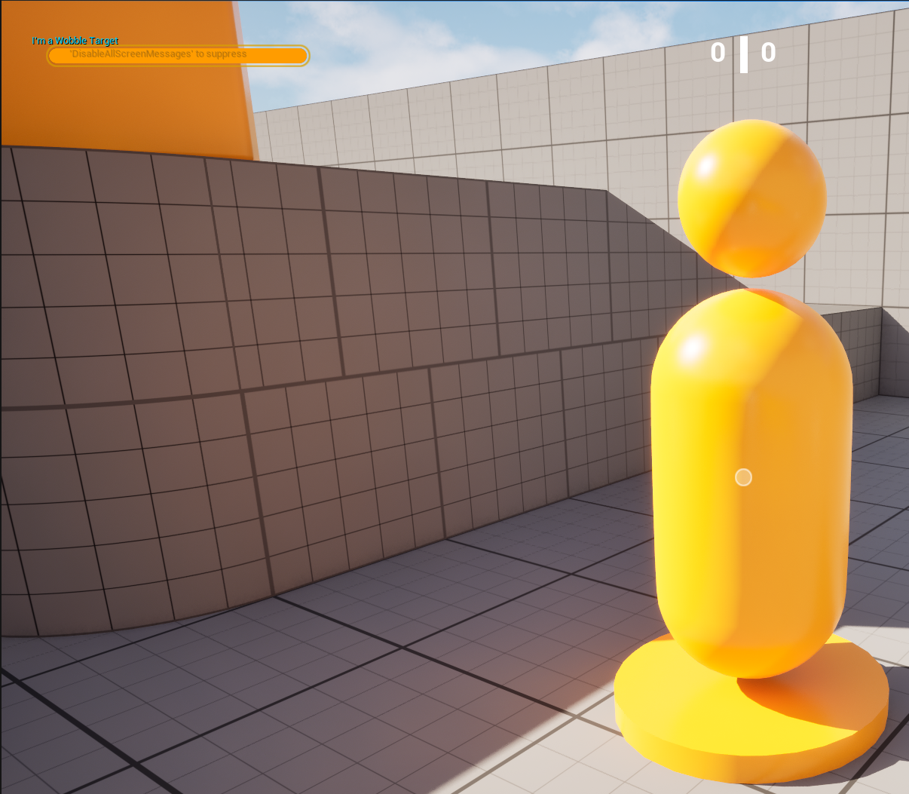
This is the distinction between Blueprintable and NotBlueprintable in practice. IHittable required a C++ class to implement the contract. IInspectable required nothing more than a Blueprint actor and a Class Settings checkbox. The designer owns the response entirely.
Open BP_HittableTarget and BP_WobbleTarget and open the Class Settings on both of them. You should see that HittableTarget has “Inherited Interfaces” and the WobbleTarget has “Implemented Interfaces”. This shows the difference between what already belongs to the C++ class and what was implemented afterward through Blueprint.
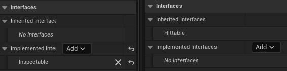
13 Exercises
Expose the damage amount per shot as an
EditAnywherevariable onAShooterWeaponinstead of hardcoding25.f. Create two Blueprint children ofBP_ShooterWeaponBasewith different damage values and observe how the same targets respond differently depending on which weapon is equipped.Add
IInspectabletoBP_HittableExplosivethrough Blueprint Class Settings. When inspected, display the explosive’s currentExplosionRadiusandExplosionDamagevalues on screen.Extend the previous exercise by also drawing a debug sphere representing the explosion radius when the explosive is inspected, so the player can visualise the danger zone before deciding to shoot it.
Create a new C++ class
AHittableShieldthat implementsIHittable. This actor has a shield and a health pool. While the shield is active, incoming hits deplete the shield instead of health. Once the shield is fully depleted, further hits reduce health normally. When health reaches zero the actor hides and respawns, restoring both shield and health.Extend
AHittableShieldfrom previous exercise by also implementingIInspectablein C++. OverrideOnInspected_Implementationto display the current shield and health values on screen. Implement it entirely in C++ without touching the Blueprint editor.
Tip
Exercise 5: With BlueprintNativeEvent, the function you override in C++ is not OnInspected itself but OnInspected_Implementation. Declare it as virtual in the AHittableShield’s header and Unreal Header Tool (UHT) generates the connection between the two automatically.